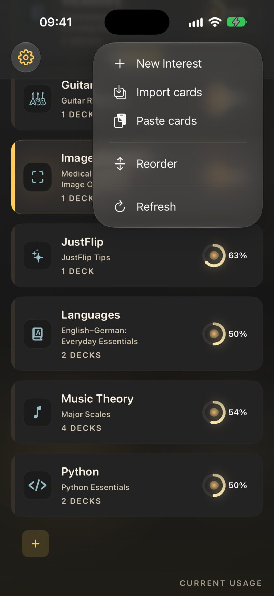
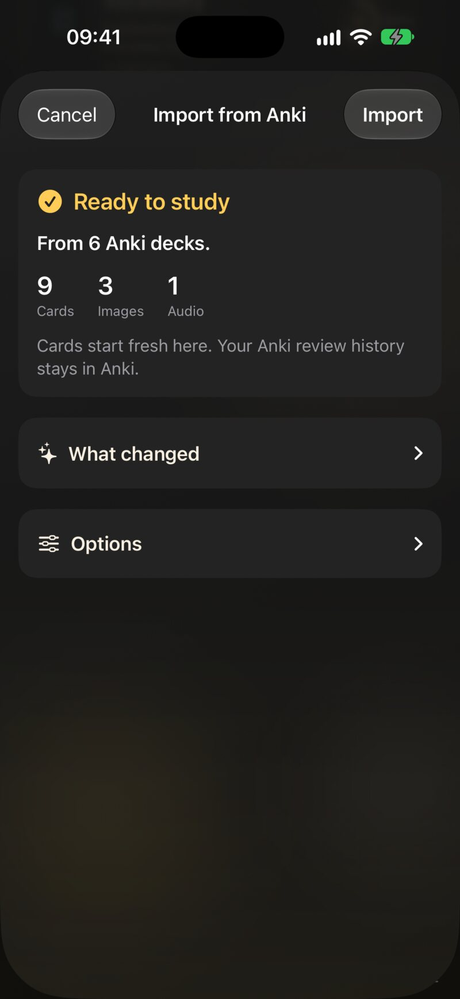
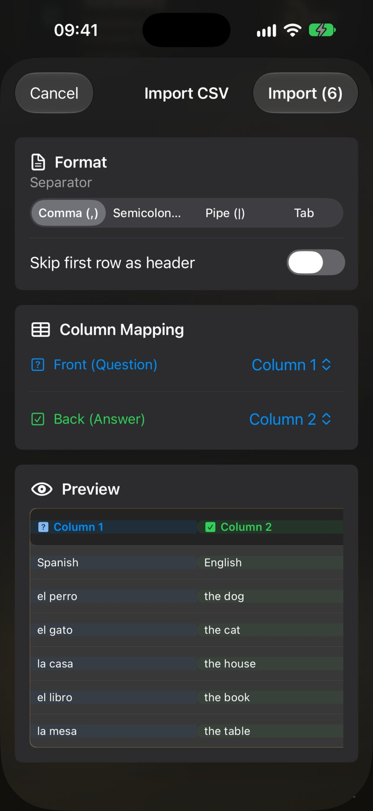

5.1 Where import lives
Every import starts on the Interests screen. JustFlip! recognises the file by its name and content, so the same entry points take every format.
| On | How |
|---|---|
| iPhone, iPad | The Add or import menu (the tray button) → Import cards |
| iPhone, iPad | In Files, Mail or Safari: share the file, or open it with JustFlip! |
| iPad, Mac | Drag files onto the interests list — it shows Drop to import |
| Mac | File › Import Cards… (⇧⌘I) or File › Import Interest Archive… |
| Any | Press and hold an interest → Import cards: a CSV or Anki file straight into that interest |
| Any | Add or import → Paste cards: cards you copied (see Paste cards) |
The main import accepts several files at once, and whole folders: every supported file inside is imported.

5.1.1 What each file becomes
| File | What it is | Where it lands |
|---|---|---|
.apkg, .colpkg |
An Anki deck or collection | An interest you choose; one deck per Anki deck |
.csv |
A spreadsheet, one card per row | An interest you choose; always a new deck |
.flashcards |
A deck file, text only — made by an AI, or curated | The interest named inside the file |
.flashcards.zip |
A deck file with pictures and sound, or an exported interest | The interest named inside the file |
For Anki and CSV files, JustFlip! first asks where to put the cards. The Import Cards sheet has an Interest menu — including New Interest… — and, for a spreadsheet, a Deck Name. Tap Continue.
When the import creates a new interest, the sheet also offers Include in device search, which decides whether its cards can appear in Spotlight (Chapter 8).
5.2 Anki decks
JustFlip! imports Anki’s deck packages (.apkg) and
collection packages (.colpkg), from old and current
versions of Anki. In Anki, use File › Export, choose
Anki Deck Package, and include media. Then import the file as
above.
The promise is simple: the learning content comes across; Anki’s presentation doesn’t. Your words, pictures, sounds, formulas and tags arrive. Anki’s styling, scripts and scheduling stay behind.
5.2.1 What comes across
- Every card. Each Anki card becomes a JustFlip! card. Front/back, reversed and optional-reversed note types all work.
- Cloze notes, split up. A note with
{{c1::…}},{{c2::…}}and{{c3::…}}makes three JustFlip! cards, one per number, exactly as it did in Anki. Each card blanks its own number and shows the others filled in. A hint such as{{c1::Paris::capital}}is kept. - Pictures, inline, in the order they appear. An Anki picture’s alternative text becomes what the voice says for it.
- Sound. Every
[sound:…]on a side is kept, in order (Chapter 4). - Image occlusion, from Anki’s own tool and from the older Image Occlusion Enhanced add-on. Both become native occlusion cards.
- Formatting: bold, italic, lists, links, small tables, maths and sub- and superscripts.
- Tags.
- Deck structure, flattened. JustFlip! has no
sub-decks, so
Languages::Spanish::Verbsbecomes one deck called Languages / Spanish / Verbs.
5.2.2 What stays in Anki
- Your review history. Every card starts as new. Anki’s intervals, ease and FSRS settings are not imported.
- Styling. Custom CSS, fonts and colours are simplified away.
- Code. JavaScript and add-ons never run, and are not kept.
- Anything online. Remote images, embedded pages and iframes are not fetched.
- Video.
- Flags. Anki’s card flags are not carried over.
- The repeated question. Anki shows the question again on the answer side; JustFlip! flips the card in place, so that copy is dropped. Cloze cards are the exception, because there the repeated sentence is the answer.
A deck that shows 300 notes in Anki can arrive as 700 cards. That isn’t duplication: each cloze number is a card, in Anki and in JustFlip!. The count on the import sheet is the number of cards.
Anki doesn’t store which language a field is in, so every imported card starts with its Language set to None — and a side with no language is never read aloud (Chapter 3). If you want to listen to an imported deck, set the language on its cards.
5.2.3 The import sheet
Importing a single Anki file from the Add or import menu, from Files or by dragging opens Import from Anki. It reads the package first — Checking the package…, Unpacking…, Reading cards… — then shows Ready to study: how many Anki decks, Cards, Images and Audio it found.

Under What changed is the import report: one plain sentence for each thing worth knowing before you commit. For example:
- Cards start fresh here. Your Anki review history stays in Anki.
- Answers no longer repeat the question — JustFlip keeps it on screen while you flip.
- 12 images could not be read and were left out.
- 3 cards had nothing on their question side and were skipped.
- 2 fields came from Anki add-ons and were left out.
Nothing is written into your cards. A missing picture is simply missing, and the report is the only place that says so.
Under Options are the Decks the import will create, and one choice — If you already have these cards:
| Option | Cards you already imported from this package |
|---|---|
| Add a new copy | Left alone; the whole package is added again, as new decks. The default |
| Skip the ones I have | Kept as they are; only new cards are added |
| Update them, keep my progress | Their text, pictures and tags are refreshed from the file; your schedule is untouched |
JustFlip! remembers which Anki note and card each imported card came from, so matching works even after you edit the question in JustFlip!. Tap Import to add the cards.
Keep working in Anki, export again, and import with Update them, keep my progress. Corrections come across, new notes are added, and your JustFlip! schedule stays yours.
Two Anki routes import straight away, with no sheet and always as a new copy: Import cards from an interest’s own menu, and several Anki files chosen at once. To skip or update cards you already have, import one file at a time from the Add or import menu.
5.3 Spreadsheets (CSV)
A CSV file is the simplest way to move a list into JustFlip!: a vocabulary list, a glossary, an export from another app. Each row is one card; one column is the question, another the answer.
Question,Answer
el perro,the dog
el gato,the cat
"la casa, el hogar",the homeAfter Continue, Import CSV shows a live preview:
- Separator — comma, semicolon, pipe or tab. JustFlip! guesses it from the first rows; change it if the columns look wrong.
- Skip first row as header — off at first. Turn it on when your first row holds column titles.
- Column Mapping — pick which column is Front (Question) and which is Back (Answer). Other columns are ignored.
- Preview — the first rows as they will be read.
Tap Import (N) when it looks right.

A few details that save a second attempt:
- Put a field in double quotes when it contains the separator or a
line break; write a quote inside it as
"". - Text can use the card markup from Chapter 3 — bold, maths, cloze. A
{{c1::…}}in a CSV cell stays one card with all its blanks; CSV cards are never split the way Anki cloze notes are. - A row with an empty question is skipped. A row with an empty answer is imported as a card with no answer.
- CSV cards have no language, no pictures and no tags.
Skip first row as header starts off. Forget it, and your column titles become a card called “Question” whose answer is “Answer”. Check the preview’s first row before you import.
Every CSV import creates a new deck, even when a deck of the same name already exists — you end up with two. To change cards you imported from a spreadsheet, edit them in JustFlip!, or delete the old deck before importing the corrected file.
5.4 Decks made with AI
The easiest deck to learn from is the one made from your material: your notes, a chapter, a lecture transcript. JustFlip! doesn’t talk to any AI itself. Instead, the website gives your AI the instructions for writing a JustFlip! deck file, and you import the result.
| Page | For | You get |
|---|---|---|
| AI Prompt | Any chat AI — ChatGPT, Claude, Gemini | A text-only .flashcards file |
| AI Skill | A coding agent that can read files on your computer | A .flashcards.zip, with pictures and sound |
A chat AI can only hand back text, so the AI Prompt page asks for a text-only deck. A coding agent can open your local images and audio and pack them into a zip, with descriptions, licences and even image occlusion.
Import the file like any other. The file names its own interest and decks, so there is no setup sheet: JustFlip! uses an interest with that name if you have one, and creates it otherwise. A deck file can also set each deck’s language, so the cards are ready to be read aloud.
An AI can be confidently wrong. Skim a new deck once before your first review, and fix or delete anything doubtful. Ten minutes of editing beats weeks of reviewing a wrong answer.
5.5 Paste cards
Sometimes the cards are already on your clipboard — a chat AI’s reply, a column from a spreadsheet, a list in Notes. Choose Add or import → Paste cards. As its How it works note explains, you copy the cards — one per line, question and answer separated by a comma — and tap Paste. JustFlip! finds the cards inside what you copied, including inside a chat AI’s code block, and ignores the text around them.
A pasted list goes through the same Import
Cards and Import CSV sheets as a CSV
file, into a deck named Pasted cards unless you change
it. A pasted deck file — the JSON an AI writes from the AI Prompt page —
is imported like a .flashcards file. Nothing leaves your
device.
5.6 Curated decks
The Decks page on the
website is a small library of ready-made decks — languages, music,
mathematics, programming and science — in every language the app speaks.
Tap Download deck, then open the file with JustFlip!.
They are ordinary .flashcards and
.flashcards.zip files, so everything in Importing the same file again applies to them
too.
5.7 Importing the same file again
Deck files — .flashcards and
.flashcards.zip from an AI, the curated library or your own
editor — are designed to be imported again and again. Fix a typo in the
file, add ten cards, import it: your deck is updated instead of
doubled.
This is how JustFlip! matches them up:
- The interest is the one with the file’s interest name. Letter case and stray spaces don’t matter.
- The deck is the one in that interest with exactly the file’s deck name.
- Each card is matched by its question text, exactly as written. A match is updated in place — its answer, pictures and sounds are replaced from the file, and its progress is kept. A card with no match is added.
Cards that are in your deck but not in the file are left alone; an import never deletes anything.
Because cards are matched by their question, two cards in one deck with the same question text — “Name this note.”, “Translate:” — end up as a single card, even in a brand-new import. Give every card its own question, or move the shared prompt into the deck name.
A card with no question text at all — only a picture — can’t be
matched, so it is never merged. That keeps a deck of “What is this?”
pictures intact, but it also means that importing the file again adds
those cards a second time. In a deck file, leave the q
field out entirely for such cards: an empty "q": "" counts
as a question text and merges with every other empty one.
Updating a card replaces its content with the file’s. If you corrected an answer in JustFlip!, make the same fix in the file — or the next import puts the old answer back. And if you rename the deck in JustFlip!, the file no longer finds it: the next import creates a fresh deck under the old name.
Anki packages follow their own rule — the choice in the import sheet. CSV files are never matched at all.
5.8 Exporting and sharing
To take an interest with you, press and hold it (right-click on a Mac) and choose Export archive. On a Mac, File › Export Interest… (⇧⌘E) does the same for the selected interest. JustFlip! writes one file, Interest name.flashcards.zip, and asks where to save it.
The archive holds everything in that interest: every deck and card, the pictures and sounds, and your full review progress. Save it to Files or iCloud Drive, AirDrop it, or send it like any other file.
Importing an archive restores exactly that interest. Its interest, decks and cards are matched by the hidden identifiers the archive carries, not by their names, so nothing is doubled — renamed decks are found too.
Importing an archive sets each card’s schedule to the one saved in the archive. Import an old archive over an interest you are still studying, and those cards go back to where they were when you exported. Your review history is merged, not duplicated. Cards you added after the export stay — and cards you deleted after it come back.
An archive also contains your progress, and whoever imports it gets
your schedule for those cards. For a clean copy, share the original deck
file — the .flashcards or .flashcards.zip you
imported — instead.
The same menu has Export statistics, as a Spreadsheet (CSV) or Full Data (JSON). Those files are for reading and analysis, not for importing back (Chapter 9). For a backup of your whole library, see Chapter 10.
5.9 When an import surprises you
| What you see | Why, and what to do |
|---|---|
| Fewer cards than rows or notes | Cards with the same question text merged (deck files), or rows with an empty question were skipped (CSV) |
| More cards than Anki notes | Each cloze number is its own card — that’s expected |
| The deck appeared twice | A CSV always makes a new deck; an Anki import made with Add a new copy adds new decks |
| Picture-only cards doubled | They can’t be matched on re-import; delete the extras, or import into a fresh deck |
| Imported cards stay silent | Anki and CSV cards have no language — set one on the cards (Chapter 3) |
| The first card is “Question / Answer” | Turn on Skip first row as header |
| All the text sits in one column | Change the Separator in the CSV preview |
| A picture is missing | Check the Anki report, and remember that SVG isn’t supported (Chapter 4) |
| My fix disappeared after an import | The file’s version replaced it — fix the file too |
| A card’s schedule jumped back | You imported an older archive of that interest |